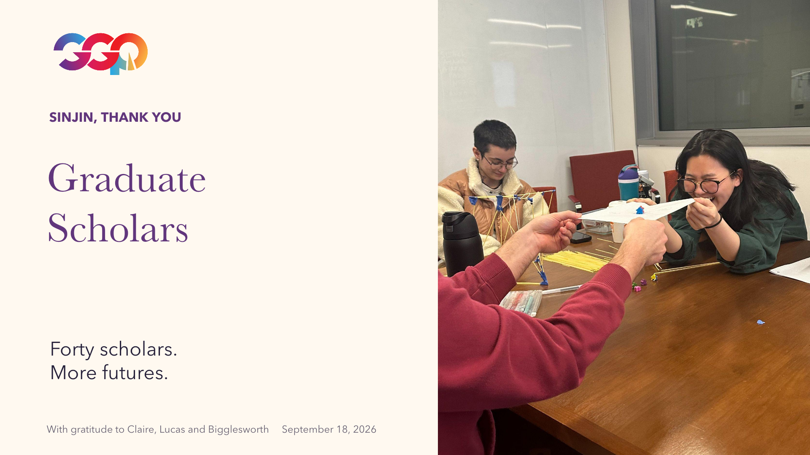

WITH GRATITUDE TO SINJIN, CLAIRE, LUCAS & BIGGLESWORTH
More graduate scholars.
More people in their corner.
You bring people together. Here is what those relationships could make possible next.
40graduate scholars
in the next cohort target
90%growth from last year’s
21 graduate scholars
8industry mentors
proposed for the cohort
Target: 40 graduate scholars, up from 21 last year. About 90% growth, with mentorship, community and practical next steps. Proposed support and delivery capacity still need confirmation.
THE CONVERSATION
A year we can shape together

Read this slide as text
SINJIN, THANK YOU
Graduate
Scholars
Forty scholars.
More futures.
With gratitude to Claire, Lucas and Bigglesworth September 18, 2026
A NOTE TO DARBY
What would you
like to shape?
An introduction. A question. A better way to reach a graduate student. Your thoughts help us make this useful.
Your draft stays in this browser until you choose to send it. The buttons open an email addressed to Darby.